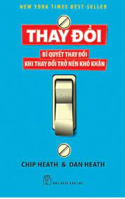

Thay đổi - bí quyết thay đổi khi thay đổi trở nên khó khăn |
|
|---|---|
|  | Tác giả: Chip Heath |
| Đồng tác giả: Dan Heath | |
| Năm phát hành: 2019 | |
| Thể loại: Tâm lý học hành vi | |
| Độ dài: 350 | |
Nội dụng của cuốn:Thay đổi là điều cần thiết trong suốt cuộc đời, nhất là khi bạn cần vượt qua một thử thách nào đó. Và cuốn sách về tâm lý học hành vi hay - Thay Đổiđề cập đến sự thay đổi thông qua những điều sau: Định hướng, Động viên, Tạo dựng con đường. Đọc cuốn sách này sẽ giúp bạn đúc kết thêm nhiều kinh nghiệm hay về cuộc sống. Đồng thời, vận dụng sự thay đổi để giúp cuộc sống trở nên tốt đẹp hơn. |
|